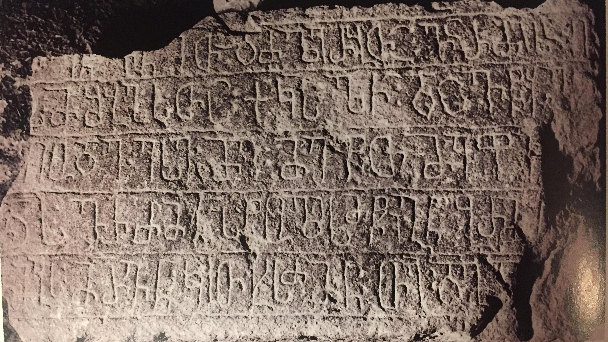

თმოგვის მურვან კჳითხისძის წარწერა
შინაარსი / Summary
საამშენებლო Building
ბიბლიოგრაფია Bibliography
კრიტიკული გამოცემა Interpretive Edition
† შეწ ევნითა და ძლ(ი)ერ(ე)(ი) სა(ი) ღ(ო)სმშ(ი)ბლ(აჲ)სთა ქ(რონი)კ(ონ)ს ლჱ დავ(ი)წყე
ზღუდე ესე მე მეფეთ მეფი ს
დ(ავი)თ(ი)ს ვ(ა)რძ(იელ)მ(ა)ნ ს(ა)წოლის მწიგნ(ო)ბ(ა)რმ(ა)
5თმოგ(უ)სმ(უ)რვ(ა)ნკჳთხ(ი)სძ(ე)მ(ა)ნ თ(ევდორ)ე დ(ად)გა
დიპლომატიური გამოცემა Diplomatic Edition
† ႸႤႼ ႤႥႬႨႧႠ ႣႠ ႻႪႤႰ ႱႠ ႶႱႫႸႡႪႱႧႠ ႵႩႱ ႪჁ ႣႠႥႼႷႤ
ႦႶႳႣႤ ႤႱႤ ႫႤ ႫႤႴႤႧ ႫႤႴႨ Ⴑ
ႣႧႱ ႥႰႻႫႬ ႱႼႭႪႨႱ ႫႼႨႢႬႡႰႫ
5ႧႫႭႢႱႫႰႥႬႩჃႧႾႱႻႫႬ ႧႤ ႣႢႠ

თმოგვის მურვან კჳითხისძის წარწერა
{'default': '† ვარძიის ღვთისმშობლის შეწევნითა და ძლიერებით, ქორონიკონსა ლჱ (38) დავიწყე ამ ზღუდის შენება თმოგვს მე, მეფეთ-მეფე დავითის ვარძიელმა საწოლის მწიგნობარმა,\n მურვაბ კჳთხისძემ, თევდორემ დადგა.'}
{'default': 'თმოგვის მურვან კჳითხისძის წარწერა ამჟამად დაცულია ვარძიის მუზეუმ-ნაკრძალის ქვის ძეგლების საცავში, სამონასტრო კომპლექსის ერთ-ერთ გამოქვაბულში.\n წარწერის მიხედვით, 1350 (ქრონიკონი ლჱ - 1312+38) წელს დავით მეფეთა მეფის (1246-1270) ვარძიელ საწოლის მწიგნობარს\n (მწიგნობართუხუცესის ერთ-ერთი მოადგილე და, მაშასადამე, სამეფო კარის\n დიდმოხელე იყო. მწიგნობართუხუცესის მსგავსად ისიც სასულიერო პირია, ამიტომ ვარძიელი აქ შეიძლება ვარძიის მონასტრის წინამძღვარსაც,\n ან წარმოშობით ვარძიელსაც აღნიშნავს), მურვან კჳითხისძეს, თმოგვში ზღუდის მშენებლობა დაუწყია, რომელიც, „თევდორე დადგა“, ალბათ, გაასრულაო.'}
<div type="edition" xml:lang="ka" ana="mtavruli" xml:space="preserve">
<ab>
<lb n="1"/><w lemma="ქრისტე"><expan><abbr>ქ</abbr><ex>რისტ</ex><abbr>ე</abbr></expan></w>
<w lemma="განსუენება"><expan><abbr>გა</abbr><ex>ნ</ex><abbr>ო</abbr><ex>ჳ</ex><abbr>ს</abbr><ex>უ</ex><abbr>ენე</abbr></expan></w>
<w lemma="სულ">სოჳ<lb n="2" break="no"/>ლსა</w>
<name nymRef="ვაჩა">ვაჩაჲს<lb n="3" break="no"/>ასა</name>
<name nymRef="გურა"><expan><abbr>გო</abbr><ex>ჳ</ex><abbr>რაჲ<lb n="4" break="no"/>სასა</abbr></expan></name>
<name nymRef="მირა"><expan><abbr>მ</abbr><ex>ი</ex><abbr>რა</abbr><ex>ჲ</ex><abbr>ს</abbr><ex>ა</ex><abbr>ს</abbr><ex>ა</ex></expan></name>
</ab>
</div>